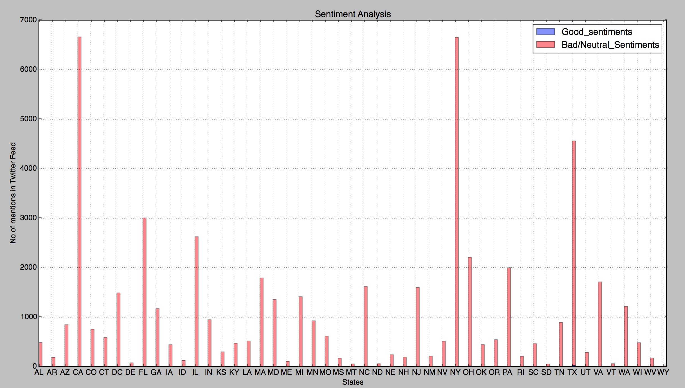
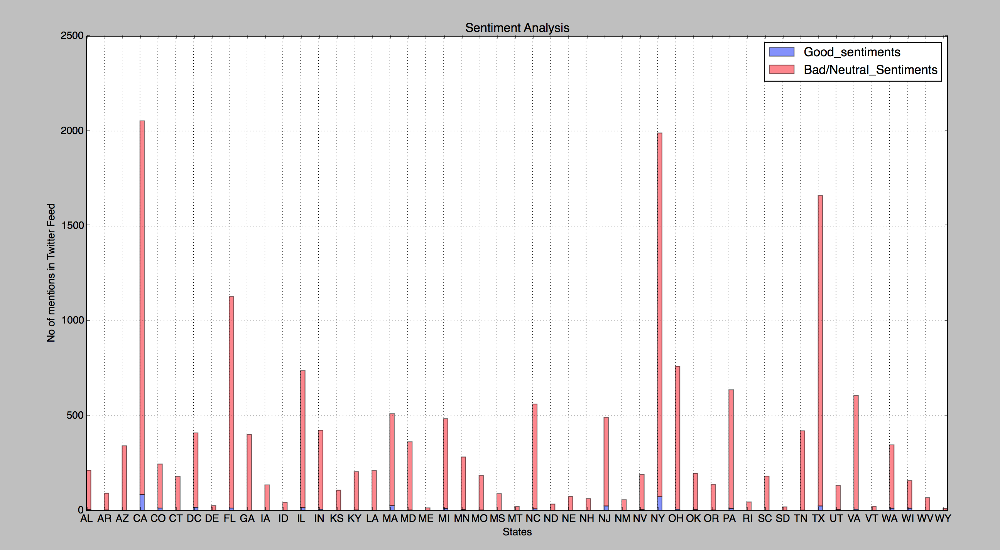

We can observe that there have been lot of mentions of Donald Trump in Twitter Feed. However, the number of feeds that say anything positive about him is very less.

We can observe that even though there have been lesser mentions about Hillary Clinton in Twitter feed, the number of feeds that say positive things about her is relatively high.
The overall tweets mentioning Donald Trump has been as high as 6500 in CA, and on an average has been mentioned a few thousand times overall in all the states.There were totally 53560 Tweets about Donald Trump out of which only 172 tweets said positive things about him, which comes to 0.028 % of total tweets being positive.
The overall tweets mentioning Hillary Clinton have been relatively less with the maximum being 2054 in CA, and the total number of tweets coming up to 17799.The number of tweets that said positive things about Hillary is about 452 which is 2.53% of the total tweets about her.
The figures give us an impression that Donald Trump is more popular because he was mentioned almost 3 times as much as Hillary Clinton was mentioned.But it also appears that Hillary is more popular in a positive way than Donald Trump.